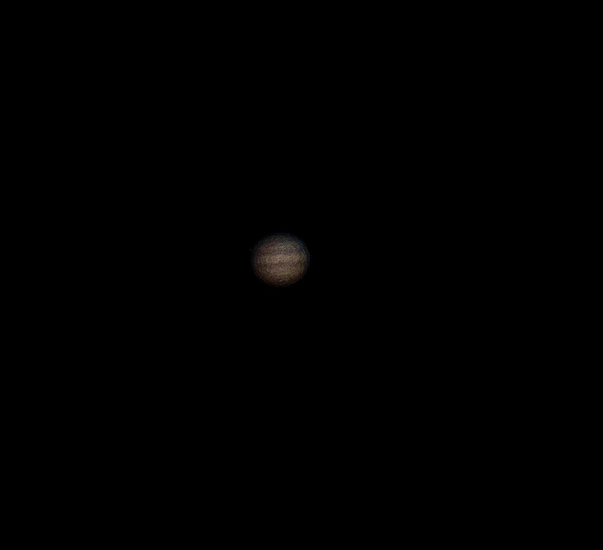
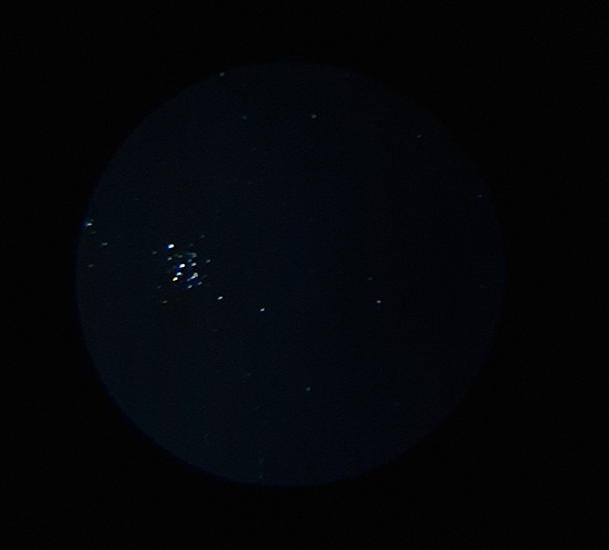
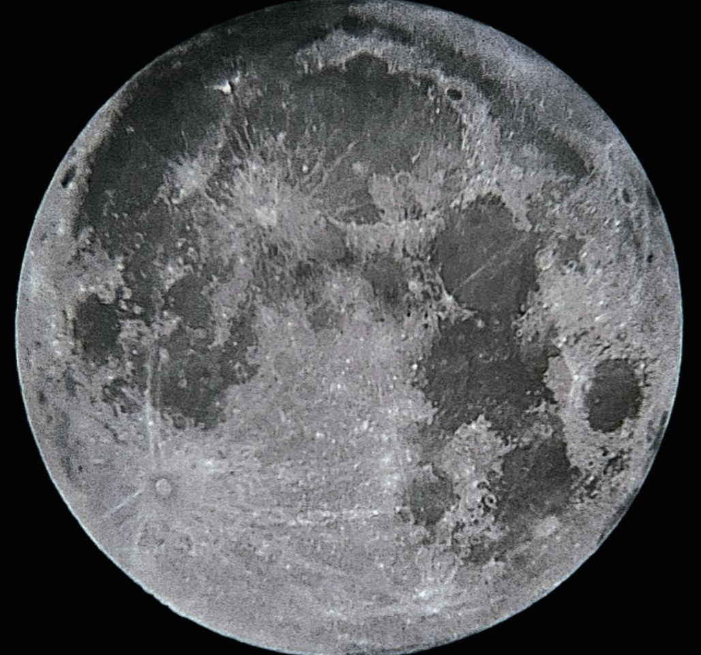
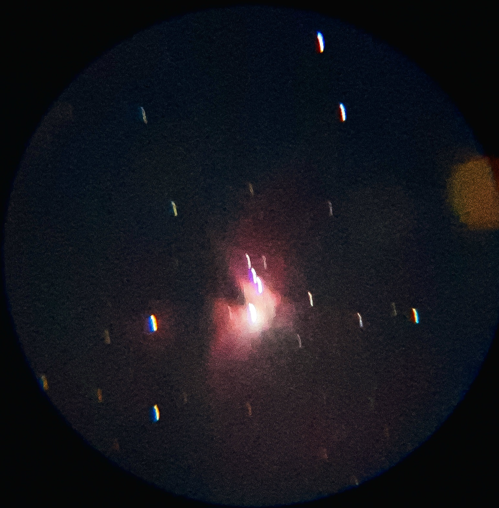

Meu nome é Isaac Alison, tenho 16 anos e comecei a tirar fotos de astros, planetas e etc, no começo de 2026.
Espero que gostem!
Obs:Como eu comecei no início de 2026 não tenho muitas imagens de outros planetas e eventos astronômicos, mas quando conseguir novas imagens irei atualizar o site e postar.

Este é o maior planeta do Sistema Solar e o que possui mais luas contendo 90 satélites naturais. Seu tamanho é tão grande que seria capaz de abrigar 1.300 Terras dentro dele.
Ele gira tão rápido que um dia dura apenas 10 horas, possui uma tempestade gigante a famosa chamada de Grande mancha vermelha que pode durar até 300 anos.
Na primeira imagem podemos observar 4 luas Galineanas sendo elas:
Lua EuropaNa segunda imagem podemos ver 2 faixas vermelhas chamadas de Cinturões, essas faixas existem porque a atmosfera de Júpiter possui ventos extremamente fortes que circulam em direções opostas.

Aglomerados estelares como o nove já diz é um certo ponto do universo com centenas ou milhares de estrelas aglomeradas em um único lugar.
O mais famoso e mais fácil de localizar a olho nu é o aglomerado de plêiades fica localizado na constelação de Touro.



Chegou a vez do nosso satélite natural, ela é o quinto maior satélite natural do nosso Sistema Solar.
sempre veremos a mesma face dela pois sua rotação é igual a translação, ela está se afastando cerca de 3,8cm por ano.
A gravidade da lua:
Produz as marés, ajusta estabilizar a inclinação da terra e influencia diversos fenômenos naturais.
Todas as fotos foram tiradas com meu telescópio amador Lorben 90mm.
Link do produto: Ver produto